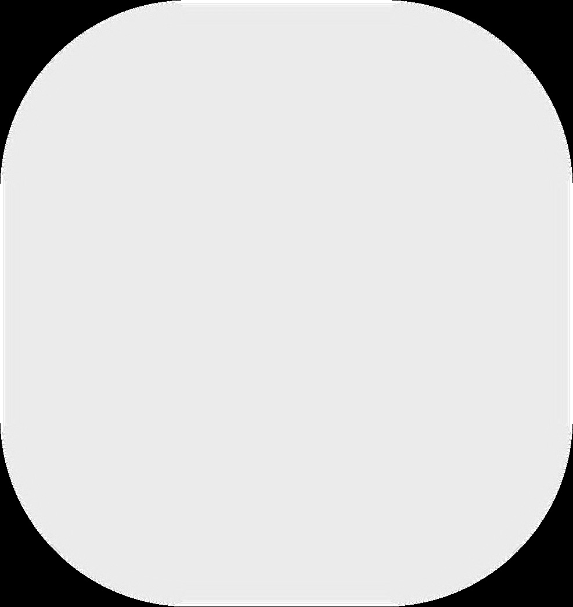
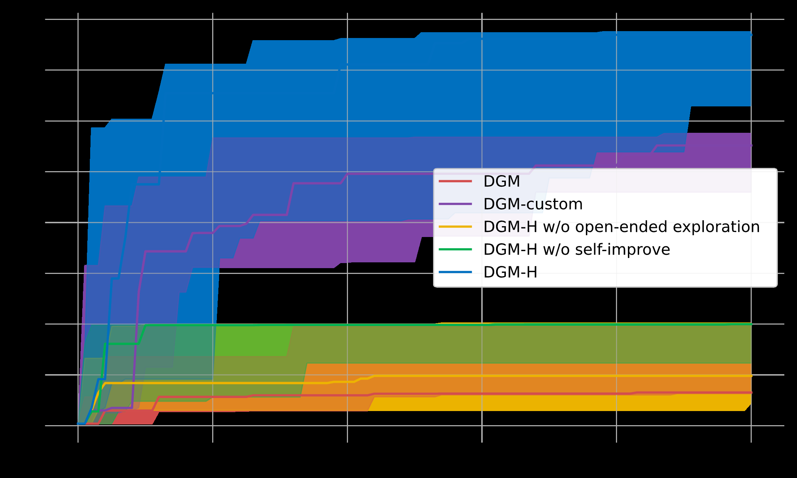
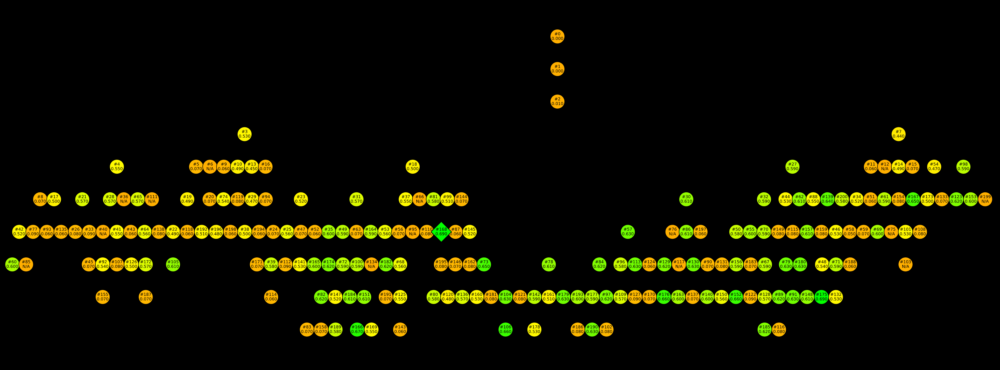

HyperAgents란?
Meta FAIR와 UBC 등이 발표한 HyperAgents는 “자기참조 자기개선 에이전트(Self-referential self-improving agents)“라는 새로운 AI 시스템 클래스를 정의하고 구현한 연구입니다.
이전의 자기개선 에이전트(예: Darwin Gödel Machine, DGM)는 코딩 과제에만 자기개선이 가능했습니다. 메타 에이전트의 개선 메커니즘이 코딩에 하드코딩되어 있었기 때문입니다.
HyperAgents는 이 한계를 제거합니다:
Task agent와 Meta agent를 하나의 Python 프로그램으로 통합. 에이전트가 자기 자신의 코드 전체 — 과제 해결, 에이전트 생성, 평가, 아카이빙 메커니즘까지 — 를 자유롭게 분석하고 편집하고 재실행할 수 있게 함.
이를 **“Metacognitive Self-modification”(메타인지적 자기수정)**이라고 부릅니다. 단순히 과제 성능을 개선하는 게 아니라, 개선 프로세스 자체를 개선하는 것입니다.

Figure 1: 원본 DGM과 HyperAgents(DGM-H)의 비교. DGM-H에서는 Meta agent도 완전히 편집 가능하여, 모든 도메인에서 메타인지적 자기수정이 가능합니다.아키텍처 분석
3-레이어 자기개선 루프
코드를 직접 분석해보니, 구조는 놀랍도록 직관적이었습니다:
1. MetaAgent — 리포지토리 전체에 접근해서 자유롭게 코드를 읽고 수정합니다. 사용하는 도구는 bash 셸과 파일 에디터 뿐. 프롬프트는 단 한 줄입니다:
instruction = f"Modify any part of the codebase at `{repo_path}`."에이전트가 스스로 무엇을, 어떻게 수정할지 판단합니다.
2. TaskAgent — 수정된 코드로 실제 과제를 풉니다. LLM 호출 1회로 JSON 형식 응답을 추출합니다.
3. generate_loop — Docker 컨테이너 기반으로 세대별 진화를 관리합니다:
부모 선택 → Docker 생성 → MetaAgent 실행(코드 수정)
→ TaskAgent 평가(staged → full) → 점수 기록 → 반복
부모 선택: 탐색과 활용의 균형
기본 전략은 score_child_prop입니다. 점수가 높은 후보에 가중치를 주면서, 자식이 많은 노드에는 페널티를 부여합니다. 이게 핵심인데, 강한 노드만 계속 선택하면 탐색이 멈추고 수렴해버리기 때문입니다.
scores = [1 / (1 + math.exp(-10 * (score - mid_point))) for score in scores]
penalties = [math.exp(-(child_counts[commit]/8)**3) for commit in commits]
combined = [s * p for s, p in zip(scores, penalties)]약하지만 새로운 경로의 에이전트도 탐색 기회를 가지게 되는, 진화 알고리즘의 핵심 아이디어입니다.
12개 도메인 지원
| 카테고리 | 도메인 | 평가지표 |
|---|---|---|
| 인간 선호 | search_arena, paper_review | accuracy |
| 게임 (BALROG) | balrog_babyai, balrog_babaisai, balrog_minihack, balrog_nle | progress |
| 로봇 (Genesis) | genesis_go2walking, genesis_go2walkback, genesis_go2hop | fitness |
| 코드 | polyglot (SWE-bench 기반) | accuracy |
| 수학 | imo_grading, imo_proof | accuracy / points |

Figure 2: DGM-H의 메타레벨 자기개선 메커니즘이 도메인 간 전이가 가능함을 보여줍니다. HyperAgents만이 강하고 전이 가능한 에이전트 생성 스킬의 성장을 달성했습니다.
주요 실험 결과: 다양한 도메인에서 HyperAgents가 베이스라인을 초과하는 성능을 달성했습니다.Docker 기반 격리
모든 실행은 Docker 컨테이너에서 이루어집니다. 각 세대마다:
- 새 컨테이너 생성
- 이전 세대의 diff(patch)를 적용
- MetaAgent 실행 (최대 6시간 타임아웃)
- TaskAgent 평가 (최대 5시간)
- 컨테이너 정리
Staged eval이라는 중간 검증도 있습니다 — 샘플 10개로 빠르게 점수를 확인하고, 일정 기준을 넘으면 전체 평가를 진행합니다. 컴퓨팅 리소스를 효율적으로 쓰기 위한 설계입니다.
⚠️ litellm 보안 사태
여기서 문제가 시작됩니다. HyperAgents는 LLM 호출을 위해 litellm을 사용하며, requirements.txt에 litellm==1.74.9를 고정해둔 상태입니다.
코드 분석을 하면서 litellm의 현재 상태를 확인했는데, 5일 전에 엄청난 사건이 있었습니다.
2026년 3월 24일: TeamPCP 공급망 공격
보안 스캐너 Trivy가 해킹당했고, 그걸 통해 litellm의 PyPI 배포 권한이 탈취당했습니다. 보안 도구가 공격 경로가 된 아이러니한 사건입니다.
| 항목 | 내용 |
|---|---|
| 피해 버전 | 1.82.7, 1.82.8 |
| 안전한 버전 | ≤ 1.82.6 |
| 공격자 | TeamPCP |
| 위험 기간 | 3/24 10:39~16:00 UTC (~3시간) |
| 현재 상태 | PyPI 격리 완료, 조사 진행 중 |
타임라인:
- 2/28: TeamPCP가 Trivy GitHub Actions 취약점 발견
- 3/19: Trivy v0.69.4에 악성 코드 주입, CI/CD 자격증명 탈취
- 3/23: Checkmarx KICS GitHub Action도 탈취
- 3/24: 탈취한 PyPI 권한으로 litellm 악성 버전 게시
페이로드
v1.82.8은 특히 위험합니다. .pth 파일 기반 Python 시작훅을 설치해서, import litellm을 하지 않아도 파이썬 인터프리터가 시작될 때 자동 실행됩니다.
3단계 페이로드:
- 자격증명 수집 — SSH 키, AWS/GCP/Azure 자격증명, K8s 시크릿, CI/DC 토큰
- 암호화 외부 전송 —
models.litellm.cloud(C2 도메인) - 지속 백도어 + Kubernetes 웜 — Pod 간 전파
litellm은 하루 340만 다운로드를 기록하는 패키지입니다. DSPy, MLflow, CrewAI, OpenHands 등 수많은 AI 프레임워크가 의존하고 있습니다.
HyperAgents의 취약점
litellm==1.74.9는 3/24 백도어 페이로드는 없지만:
- CVE-2025-45809 (SQL Injection, CVSS 5.4) — 1.81.0 미만 취약
- CVE-2025-11203 — API 키 정보 유출
- CVE-2025-0330 — Langfuse 키 유출
최소 1.82.6 이상으로 업데이트해야 합니다.
교훈: 자기수정 에이전트와 보안
이 두 가지를 함께 보면 몇 가지 중요한 교훈이 나옵니다.
1. 자기수정 시스템의 보안 모델
HyperAgents의 MetaAgent는 코드베이스 전체를 수정할 수 있습니다. 여기에 의존성 설치 권한까지 있다면, litellm 같은 취약한 패키지를 자동 업데이트했다가 백도어를 끌어올 수 있습니다.
자기수정 시스템의 보안은 “무엇을 수정할 수 있는가”뿐 아니라 **“무엇을 설치할 수 있는가”**에도 달려 있습니다.
2. 버전 고정 ≠ 안전
litellm==1.74.9로 고정했지만, 그 사이 여러 CVE가 발생했습니다. 버전 고정은 재현성에는 좋지만 보안 패치는 놓칩니다. 정기적인 pip-audit나 Dependabot 설정이 필수입니다.
3. 공급망 공격은 AI 인프라를 겨냥한다
Trivy → KICS → litellm으로 이어지는 연쇄 공급망 공격. AI 개발의 핵심 인프라 패키지들이 타겟이 될 수밖에 없는 환경입니다. pip install로 그냥 설치하는 습관은 이제 위험합니다.
결론
HyperAgents의 아이디어는 AI 연구에서 중요한 방향성입니다. 에이전트가 자기 개선 메커니즘 자체를 수정할 수 있다는 것은, 이론적으로 무한한 진화의 가능성을 열어줍니다.
하지만 이런 시스템이 취약한 의존성 위에서 돌아간다는 점, 그리고 자기수정이 보안과 어떻게 충돌할 수 있는지는 경계해야 합니다.
Meta의 연구진이 보안을 고려했을 거라 믿지만, requirements.txt에 고정된 litellm==1.74.9는 그렇지 않았습니다. AI 연구 코드가 프로덕션급 보안을 갖추지 않은 채 공개되는 현실, 그리고 그 위에서 돌아가는 AI 인프라의 취약성.
litellm 사건은 AI 인프라 보안이 아직 초기 단계임을 보여줍니다. 모델 성능에 집중하는 동안, 바닥에 깔린 인프라의 보안은 간과되기 쉽습니다.
결국 HyperAgents 설치는 보류했습니다. 진행하려면 litellm을 1.82.6으로 업데이트하고 전체 의존성을 감사하는 작업부터 시작해야 합니다.